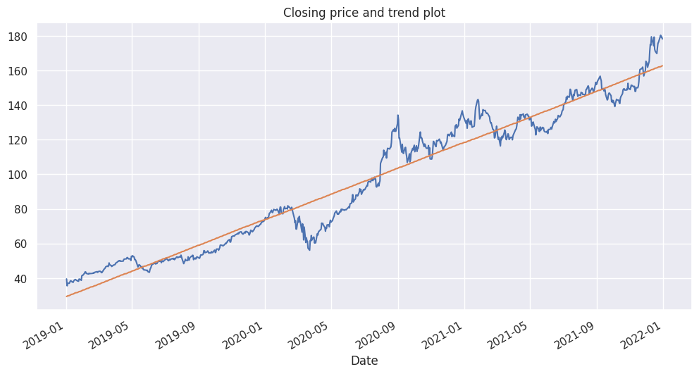
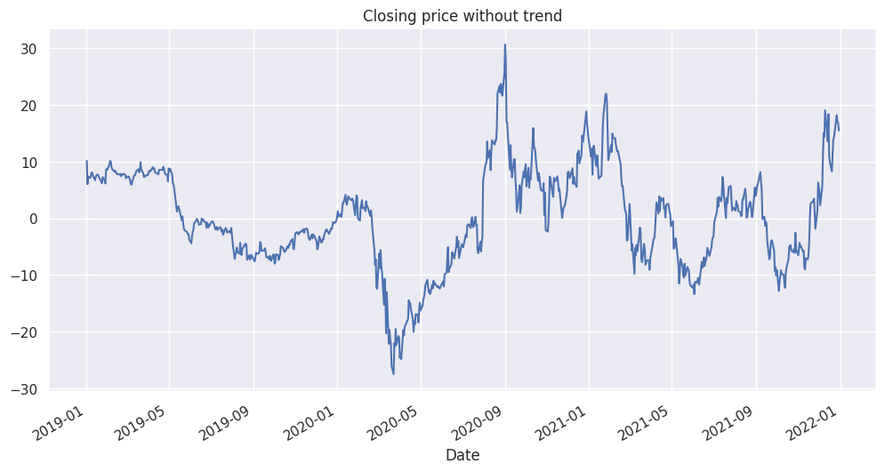
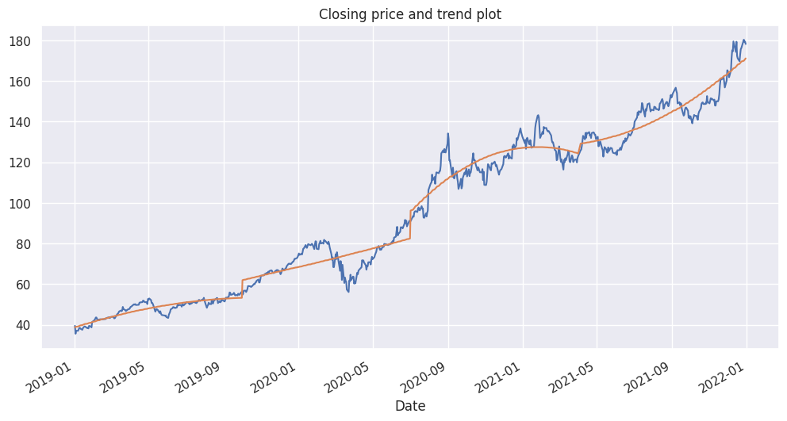
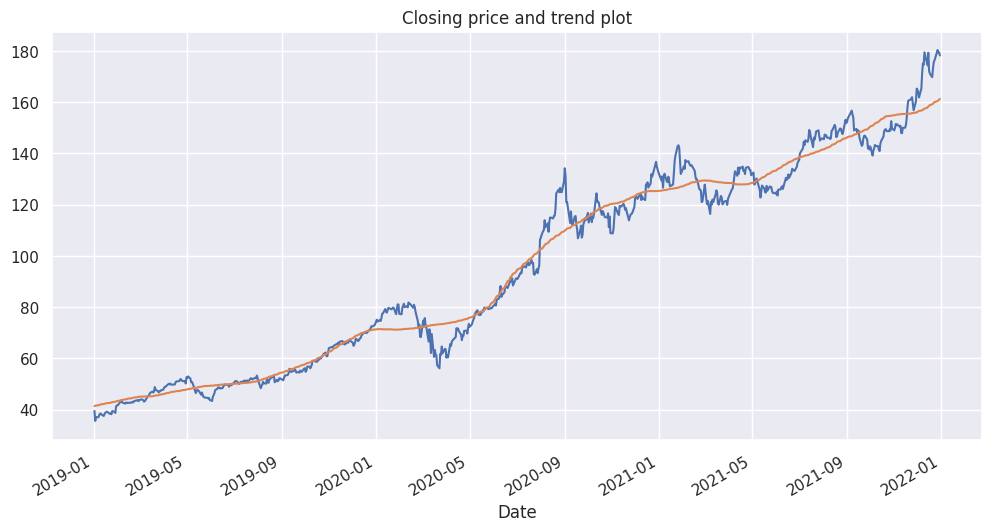
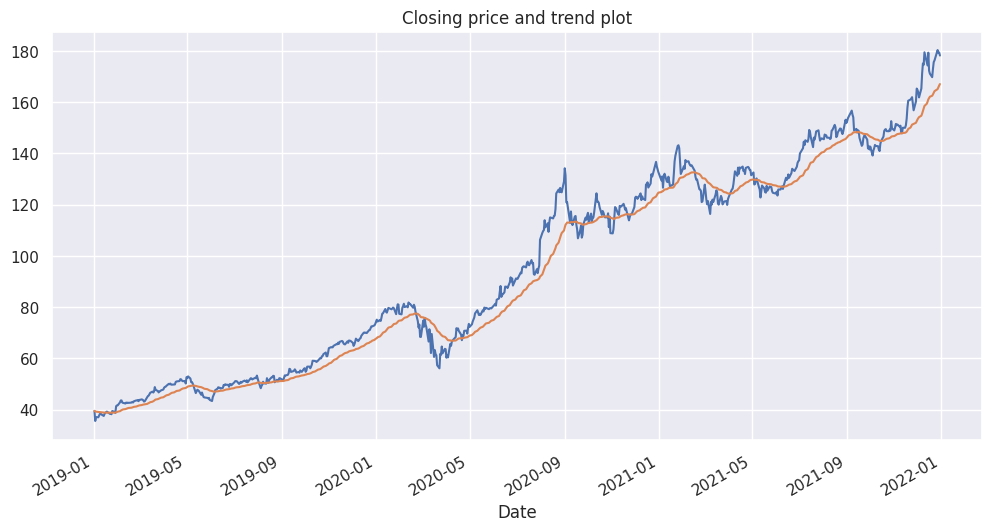
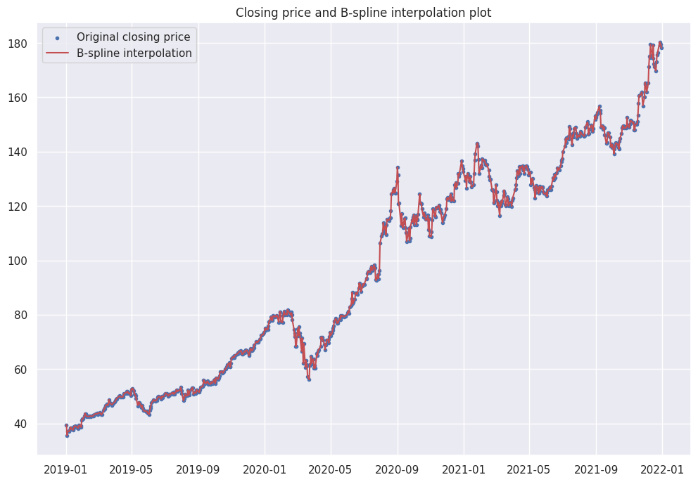
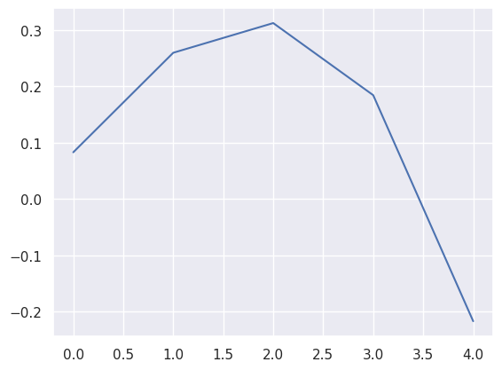
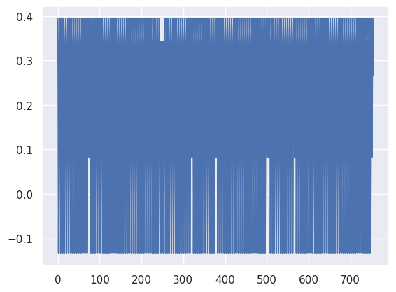
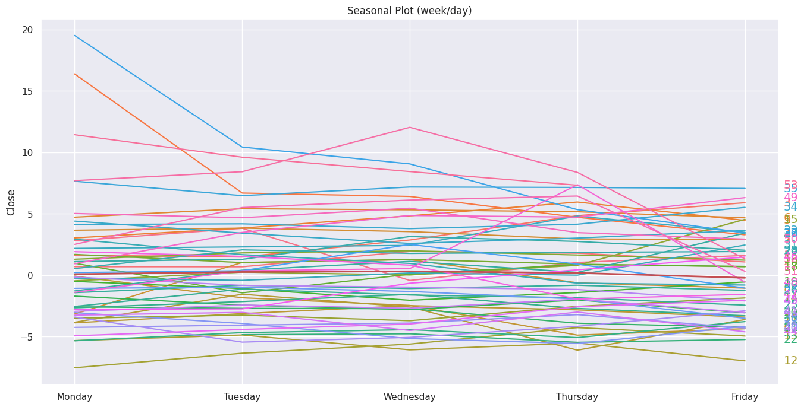
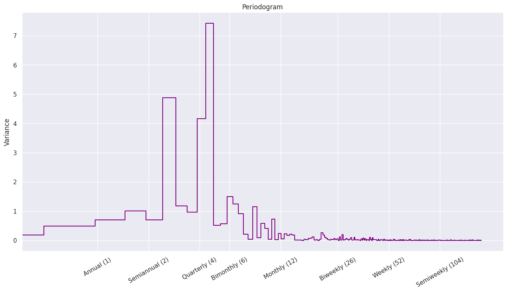

Décomposition de la série temporelle#
Imports et lecture des données#
Imports#
1import matplotlib
2import matplotlib.pyplot as plt
3import numpy as np
4import pandas as pd
5import seaborn as sns
6from scipy import interpolate
7from sklearn.linear_model import LinearRegression
8from statsmodels.graphics.tsaplots import plot_acf
9from statsmodels.tsa.deterministic import DeterministicProcess
10
11from src.utils import init_notebook
1init_notebook()
Lecture des données#
1data_folder = "data/raw_data"
1stock_name = "AAPL"
1df = pd.read_csv(
2 f"{data_folder}/{stock_name}.csv", parse_dates=["Date"], index_col="Date"
3)
4print(f"{df.shape = }")
df.shape = (756, 6)
Soustraction de la tendance#
La tendance est, pour une série chronologique, sa composante première, inhérente à la nature des données. Elle peut le plus souvent se représenter par une droite, à la hausse ou à la baisse. Dans le cas des cours boursiers, le prix a une tendance généralement haussière, qui s’explique par le concept de croissance économique.
1df["Close"].plot(title="Closing price plot (daily) with trend", figsize=(12, 6))
<Axes: title={'center': 'Closing price plot (daily) with trend'}, xlabel='Date'>

Régression linéaire#
Soit le vecteur \(Y = (y_1, \dots, y_N)\) des prix de clôture du cours aux temps (ici, des jours) \(1, \dots, N\).
L’objectif est de s’ajuster aux données avec un modèle de régression linéaire simple donné par l’équation :
où \((\beta_0, \beta_1)\) est le vecteur des paramètres à estimer
et \(X = (1, \dots, N)\) est le vecteur time dummy qui représente l’avancement linéaire du temps.
Puis il faut soustraire au vecteur de données originales \(Y\) le vecteur des prédictions \(Y_{pred}\) :
1# Create deterministic process (X)
2
3dp = DeterministicProcess(
4 index=df.index, # dates from the training data
5 constant=True, # dummy feature for the bias (y_intercept)
6 order=1, # order of the time dummy (trend)
7 drop=False, # drop terms if necessary to avoid collinearity
8)
9
10# `in_sample` creates features for the dates given in the `index` argument
11X_dp = dp.in_sample()
12
13X_dp
| const | trend | |
|---|---|---|
| Date | ||
| 2019-01-02 | 1.0 | 1.0 |
| 2019-01-03 | 1.0 | 2.0 |
| 2019-01-04 | 1.0 | 3.0 |
| 2019-01-07 | 1.0 | 4.0 |
| 2019-01-08 | 1.0 | 5.0 |
| ... | ... | ... |
| 2021-12-23 | 1.0 | 752.0 |
| 2021-12-27 | 1.0 | 753.0 |
| 2021-12-28 | 1.0 | 754.0 |
| 2021-12-29 | 1.0 | 755.0 |
| 2021-12-30 | 1.0 | 756.0 |
756 rows × 2 columns
1# Convert data and fit the linear regression
2
3X = np.array(X_dp)
4y = np.array(df["Close"])
5
6model = LinearRegression()
7model.fit(X, y)
8
9y_predict = model.predict(X)
1# Plot data and trend
2
3_, ax = plt.subplots(figsize=(12, 6))
4
5df["Close"].plot(ax=ax)
6plt.plot(X_dp.index, y_predict)
7plt.title("Closing price and trend plot")
Text(0.5, 1.0, 'Closing price and trend plot')

1# substract the trend from the original times series
2
3df["Close_detrend"] = df["Close"] - y_predict
4df["Close_detrend"].plot(title="Closing price without trend", figsize=(12, 6))
<Axes: title={'center': 'Closing price without trend'}, xlabel='Date'>

1# acf plot before / after
2
3lag = len(df) - 1
4
5_, axs = plt.subplots(2, 1, figsize=(16, 10))
6_ = plot_acf(df["Close"], ax=axs[0], lags=lag, title="ACF plot - Close price")
7_ = plot_acf(
8 df["Close_detrend"], ax=axs[1], lags=lag, title="ACF plot - Close price detrend"
9)

Les fortes autocorrélations dans le premier graphique montrent que la série temporelle contient une tendance.
Après déconstruction de la tendance, le deuxième graphique affiche cependant encore des autocorrélations importantes pour des lags petits. C’est un indice de saisonnalité ou de cyclicité.
Régression polynomiale par morceaux#
Soit \(k \in N^*\).
Pour la régression polynomiale d’ordre \(k\), le même principe que la régression linéaire simple est appliqué mais avec la particularité que des time dummies d’ordre \(1, \dots, k\) sont ajoutées comme variables explicatives au modèle.
L’équation de régression devient :
où pour tout \(i \in [1;k], \hspace{6px} X_i = (1^i, 2^i, \dots, N^i)\).
Cette méthode permet de capter une tendance polynomiale (croissante au carré du temps par exemple).
1# Choix de l'ordre de la régression et du nombre de segments
2
3order = 2
4n_segments = 4
1# Create deterministic process (X)
2
3dp = DeterministicProcess(
4 index=df.index, # dates from the training data
5 constant=True, # dummy feature for the bias (y_intercept)
6 order=order, # order of the time dummy (trend)
7 drop=False, # drop terms if necessary to avoid collinearity
8)
9
10# `in_sample` creates features for the dates given in the `index` argument
11X_dp = dp.in_sample()
12
13X_dp
| const | trend | trend_squared | |
|---|---|---|---|
| Date | |||
| 2019-01-02 | 1.0 | 1.0 | 1.0 |
| 2019-01-03 | 1.0 | 2.0 | 4.0 |
| 2019-01-04 | 1.0 | 3.0 | 9.0 |
| 2019-01-07 | 1.0 | 4.0 | 16.0 |
| 2019-01-08 | 1.0 | 5.0 | 25.0 |
| ... | ... | ... | ... |
| 2021-12-23 | 1.0 | 752.0 | 565504.0 |
| 2021-12-27 | 1.0 | 753.0 | 567009.0 |
| 2021-12-28 | 1.0 | 754.0 | 568516.0 |
| 2021-12-29 | 1.0 | 755.0 | 570025.0 |
| 2021-12-30 | 1.0 | 756.0 | 571536.0 |
756 rows × 3 columns
1# Convert data
2
3X = np.array(X_dp)
4y = np.array(df["Close"])
1# Create segments
2
3segment_length = len(y) // n_segments
4y_segments = [y[i : i + segment_length] for i in range(0, len(y), segment_length)]
5X_segments = [X[i : i + segment_length, :] for i in range(0, len(y), segment_length)]
1# Fit and predict for each segment
2
3y_pred_segments = np.array([])
4for X_segment, y_segment in zip(X_segments, y_segments):
5 model = LinearRegression()
6 model.fit(X_segment, y_segment)
7 y_pred_segment = model.predict(X_segment)
8 y_pred_segments = np.append(y_pred_segments, y_pred_segment)
1# Plot data and trend
2
3_, ax = plt.subplots(figsize=(12, 6))
4
5df["Close"].plot(ax=ax)
6plt.plot(X_dp.index, y_pred_segments)
7plt.title("Closing price and trend plot")
Text(0.5, 1.0, 'Closing price and trend plot')

Moyennes mobiles#
Linéaire#
On se munit de \((x_t)_{t \in \mathbb{N}}\) une série temporelle.
Soit \((k, t) \in \mathbb{N}^* \times \llbracket k~;~+\infty \rrbracket\),
la moyenne mobile linéaire à gauche de profondeur \(k\) pour \(x_t\) est :
1# Create the linear mobile average for the data
2
3linear_MA = df["Close"].rolling(center=True, window=100, min_periods=1).mean()
1# Plot data and trend
2
3_, ax = plt.subplots(figsize=(12, 6))
4
5df["Close"].plot(ax=ax)
6plt.plot(df.index, linear_MA)
7plt.title("Closing price and trend plot")
Text(0.5, 1.0, 'Closing price and trend plot')

Exponentielle#
La moyenne mobile exponentielle fait partie de la famille des moyennes mobiles pondérées.
On se munit de \((x_t)_{t \in \mathbb{N}}\) une série temporelle.
Soit \(t \in \mathbb{N}^*\) et \(\alpha \in [0;1]\) une constante de lissage.
On remarque que la moyenne mobile exponentielle à l’instant \(t\) prend en compte toutes les données qui précèdent. Toutefois, les valeurs très antérieures impactent très peu le résultat - d’autant plus que \(\alpha\) est grand - et peuvent donc être négligées.
1# Create the linear mobile average for the data
2
3# in pandas documentation, decay = alpha
4# decay can be chosen with optional span option in ewm method :
5# decay = 2 / (span + 1)
6# or directly by specifying alpha = 0.05
7
8expo_MA = df["Close"].ewm(alpha=0.05, adjust=False).mean()
1# Plot data and trend
2
3_, ax = plt.subplots(figsize=(12, 6))
4
5df["Close"].plot(ax=ax)
6plt.plot(df.index, expo_MA)
7plt.title("Closing price and trend plot")
Text(0.5, 1.0, 'Closing price and trend plot')

B-splines#
1# Define x and y
2
3x = np.arange(len(df)) # time dummy, x
4y = df["Close"] # price, f(x)
1# Define t the vector of knots,
2# c the B-splines coefficients
3# and k the degree of the splines
4
5t, c, k = interpolate.splrep(x, y, s=10, k=3) # s: smoothing factor
6print("Length(t) =", len(t))
7print("Length(c) =", len(c))
8print("k =", k)
Length(t) = 613
Length(c) = 613
k = 3
1# Interpolate the prices
2spline = interpolate.BSpline(t, c, k, extrapolate=False)
3y_interpolate = spline(x)
1plt.figure(figsize=(12, 8))
2plt.scatter(df.index, y, label="Original closing price", marker=".")
3plt.plot(df.index, y_interpolate, "r", label="B-spline interpolation")
4plt.legend(loc="best")
5plt.title("Closing price and B-spline interpolation plot")
6plt.show()

On obtient une courbe qui s’ajuste bien trop à nos données originales. On ne choisira donc pas cette option pour le detrending.
Traitement de la saisonnalité#
Import des données traitées de la tendance#
1data_folder = "data/processed_data/detrend_data/LinearMADetrend/window-100"
2stock_name = "AAPL"
1df_detrend = pd.read_csv(
2 f"{data_folder}/{stock_name}.csv", parse_dates=["Date"], index_col="Date"
3)
4print(f"{df_detrend.shape = }")
df_detrend.shape = (756, 6)
Seasonality plot#
1# convert datetimeindex to periodindex in order to use .week method
2# which doesnt exist for datetimeindex (wtf?)
3
4df_detrend.index = df_detrend.index.to_period("D")
5type(df_detrend.index)
pandas.core.indexes.period.PeriodIndex
1# date features
2
3df_detrend["day"] = df_detrend.index.day_of_week
4df_detrend["week"] = df_detrend.index.week
5
6# day of week dummies
7
8days = ["Monday", "Tuesday", "Wednesday", "Thursday", "Friday"]
9day_of_week_dummies = pd.get_dummies(df_detrend["day"])
10day_of_week_dummies.rename(
11 columns={day_index: days[day_index] for day_index in range(5)}
12)
| Monday | Tuesday | Wednesday | Thursday | Friday | |
|---|---|---|---|---|---|
| Date | |||||
| 2019-01-02 | False | False | True | False | False |
| 2019-01-03 | False | False | False | True | False |
| 2019-01-04 | False | False | False | False | True |
| 2019-01-07 | True | False | False | False | False |
| 2019-01-08 | False | True | False | False | False |
| ... | ... | ... | ... | ... | ... |
| 2021-12-23 | False | False | False | True | False |
| 2021-12-27 | True | False | False | False | False |
| 2021-12-28 | False | True | False | False | False |
| 2021-12-29 | False | False | True | False | False |
| 2021-12-30 | False | False | False | True | False |
756 rows × 5 columns
1day_of_week_dummies.iloc[:, 1:]
| 1 | 2 | 3 | 4 | |
|---|---|---|---|---|
| Date | ||||
| 2019-01-02 | False | True | False | False |
| 2019-01-03 | False | False | True | False |
| 2019-01-04 | False | False | False | True |
| 2019-01-07 | False | False | False | False |
| 2019-01-08 | True | False | False | False |
| ... | ... | ... | ... | ... |
| 2021-12-23 | False | False | True | False |
| 2021-12-27 | False | False | False | False |
| 2021-12-28 | True | False | False | False |
| 2021-12-29 | False | True | False | False |
| 2021-12-30 | False | False | True | False |
756 rows × 4 columns
1# seasonal linear regression
2# perform linear regression with day of week dummies as dependent variables
3
4X = np.array(day_of_week_dummies.iloc[:, 1:])
5y = np.array(df_detrend["Close"])
6
7model = LinearRegression(fit_intercept=True)
8model.fit(X, y)
9y_predict = model.predict(X)
10
11# extract the coefficients
12seasonal_coefficients = model.coef_
13intercept = model.intercept_
1np.append(intercept, seasonal_coefficients)
array([ 0.08291593, 0.25948868, 0.31214838, 0.18423684, -0.21676685])
1plt.plot(range(5), np.append(intercept, seasonal_coefficients))
[<matplotlib.lines.Line2D at 0x7f9ad0f50610>]

1plt.plot(y_predict)
[<matplotlib.lines.Line2D at 0x7f9ad6fa7040>]

1# function got from
2# https://github.com/Kaggle/learntools/blob/master/learntools/time_series/utils.py
3
4
5def seasonal_plot(
6 data: pd.DataFrame,
7 series_to_plot: str,
8 period: str,
9 freq: str,
10 ax: matplotlib.axes._axes.Axes = None,
11) -> matplotlib.axes._axes.Axes:
12 X = data
13 y = series_to_plot
14
15 if ax is None:
16 _, ax = plt.subplots(figsize=(16, 8))
17
18 palette = sns.color_palette(
19 "husl",
20 n_colors=X[period].nunique(),
21 )
22 ax = sns.lineplot(
23 x=freq,
24 y=y,
25 hue=period,
26 data=X,
27 ci=False,
28 ax=ax,
29 palette=palette,
30 legend=False,
31 )
32
33 ax.set_title(f"Seasonal Plot ({period}/{freq})")
34
35 ax.set_xticks(range(5)) # 5 jours de la semaine
36
37 days = ["Monday", "Tuesday", "Wednesday", "Thursday", "Friday"]
38
39 ax.set_xticklabels(days)
40
41 ax.set_xlabel("")
42
43 for line, name in zip(ax.lines, X[period].unique()):
44 y_ = line.get_ydata()[-1]
45 ax.annotate(
46 name,
47 xy=(1, y_),
48 xytext=(6, 0),
49 color=line.get_color(),
50 xycoords=ax.get_yaxis_transform(),
51 textcoords="offset points",
52 size=14,
53 va="center",
54 )
55
56 return ax
1_, ax = plt.subplots(figsize=(16, 8))
2seasonal_plot(data=df_detrend, series_to_plot="Close", period="week", freq="day", ax=ax)
3ax.plot(range(5), np.append(intercept, seasonal_coefficients), linewidth=2)
/tmp/ipykernel_2167/1558999379.py:22: FutureWarning:
The `ci` parameter is deprecated. Use `errorbar=('ci', False)` for the same effect.
ax = sns.lineplot(
[<matplotlib.lines.Line2D at 0x7f9ad0d36830>]

Periodogram#
1# function got from
2# https://github.com/Kaggle/learntools/blob/master/learntools/time_series/utils.py
3
4
5def plot_periodogram(
6 time_series: pd.Series,
7 detrend: str = "linear",
8 ax: matplotlib.axes._axes.Axes = None,
9) -> matplotlib.axes._axes.Axes:
10 from scipy.signal import periodogram
11
12 fs = pd.Timedelta("365D") / pd.Timedelta("1D")
13
14 freqencies, spectrum = periodogram(
15 time_series,
16 fs=fs,
17 detrend=detrend,
18 window="boxcar",
19 scaling="spectrum",
20 )
21
22 if ax is None:
23 _, ax = plt.subplots(figsize=(16, 8))
24
25 ax.step(freqencies, spectrum, color="purple")
26
27 ax.set_xscale("log")
28
29 ax.set_xticks([1, 2, 4, 6, 12, 26, 52, 104])
30
31 ax.set_xticklabels(
32 [
33 "Annual (1)",
34 "Semiannual (2)",
35 "Quarterly (4)",
36 "Bimonthly (6)",
37 "Monthly (12)",
38 "Biweekly (26)",
39 "Weekly (52)",
40 "Semiweekly (104)",
41 ],
42 rotation=30,
43 )
44
45 ax.ticklabel_format(axis="y", style="sci", scilimits=(0, 0))
46
47 ax.set_ylabel("Variance")
48
49 ax.set_title("Periodogram")
50
51 return ax
1plot_periodogram(time_series=df_detrend["Close"])
<Axes: title={'center': 'Periodogram'}, ylabel='Variance'>
